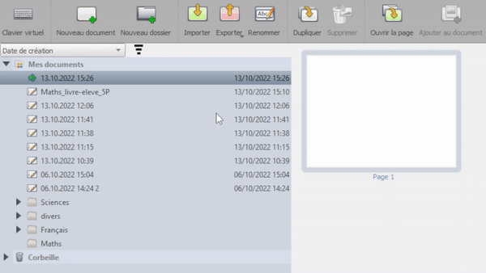

In diesem Modus finden Sie auch zwei sehr wichtige Funktionen: den Import und den Export.

Import
Sie können PDF-Dateien (.pdf), Bilder (.png, .jpg), OpenBoard-Dokumente (.ubz) oder OpenBoard-Ordner (.ubx), importieren, indem Sie anklicken 

Beachten Sie, dass Sie auch ein OpenBoard-Dokument (.ubz) importieren können, indem Sie darauf doppelklicken. Dies startet OpenBoard, wenn es nicht bereits gestartet ist, und importiert es (oder schlägt vor, die Datei zu ersetzen, wenn sie bereits vorhanden ist).
 Sie können auch mehrere Elemente auf einmal importieren, ohne dass Sie auf immer und immer wieder klicken müssen.
Sie können auch mehrere Elemente auf einmal importieren, ohne dass Sie auf immer und immer wieder klicken müssen.
Export
Sie können ein OpenBoard-Dokument im PDF- oder UBZ-Format und einen OpenBoard-Ordner im UBX-Format exportieren. So können Sie zum Beispiel :
- Die während einer Unterrichtsstunde geleistete Arbeit speichern und sie mit einem abwesenden Schüler teilen.
- Es mit anderen Lehrern teilen oder auf einem USB-Stick speichern, um es auf einen anderen Computer zu importieren.
- Die Arbeit eines Schülers im PDF-Format importieren, mit Anmerkungen versehen und das mit Anmerkungen versehene Dokument im PDF-Format exportieren, um es an den Schüler zurückzuschicken

Exportieren Sie alle Ihre Dokumente, indem Sie auf den Stammordner "Meine Dokumente" klicken, bevor Sie auf klicken, um sie im UBX-Format zu exportieren. Sie können sie dann auf einem anderen Computer importieren. Dies ist auch eine gute Möglichkeit, ein Archiv oder eine Sicherungskopie Ihrer gesamten Arbeit zu erstellen!